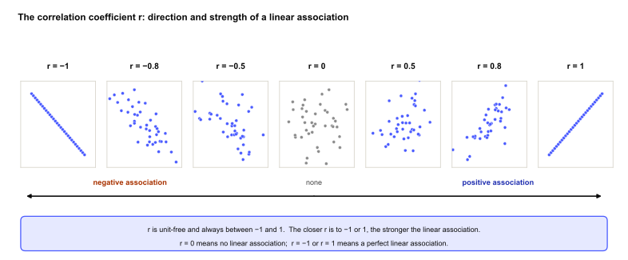
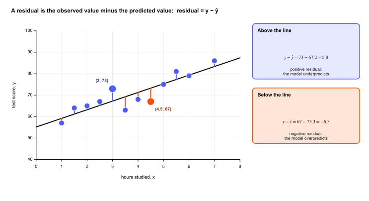
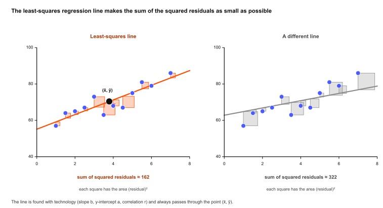

Graphical representations between two quantitative variables
Taught in: Lesson 5.1 · Describing Two Quantitative Variables
Each point is one student, plotted at (hours studied, score). In the last step the single orange point in the fourth plot is far from the pattern.
- Direction: positive when $y$ tends to increase as $x$ increases, negative when it tends to decrease.
- Form: the points follow a line (linear) or a curve (non-linear).
- Strength: how closely the points follow the pattern. Unusual features include clusters and points that do not fit the pattern.
Describe the association in a scatterplot by form, direction, strength and unusual features (5.1.B.1 to 5.1.B.5).


- 5.1.A.1A bivariate quantitative data set consists of observations of ordered pairs from two quantitative variables, collected from the same individuals in a sample or population, and can be used to construct a scatterplot.
- 5.1.A.2A scatterplot shows the relationship between two quantitative variables for each observation, one corresponding to the value on the x-axis and one corresponding to the value on the y-axis. The explanatory variable is placed on the x-axis and is the variable whose values are used to explain or predict the corresponding values for the response variable, which is placed on the y-axis.
- 5.1.B.1A description of the association shown in a scatterplot includes form, direction, strength, and unusual features.
- 5.1.B.2The form of the association shown in a scatterplot, if any, can be described as linear or non-linear.
- 5.1.B.3The direction of the association shown in a scatterplot, if any, can be described as positive or negative. A positive association means that as values of the explanatory variable increase, the values of the response variable tend to increase. A negative association means that as values of the explanatory variable increase, the values of the response variable tend to decrease.
- 5.1.B.4The strength of the association shown in a scatterplot is how closely the points follow the general pattern. Strength can be described as strong, moderate, or weak.
- 5.1.B.5Unusual features of a scatterplot include clusters of individual points or points that don’t fit in the general pattern of association between the two variables.
- 5.1.C.1Scatterplots depicting the relationship between two numeric variables may reveal information that can be used to justify claims about the variable in context.
Correlation (introduction)
Taught in: Lesson 5.1 · Describing Two Quantitative Variables
Each plot shows $18$ points with its value of $r$. The curved plots show patterns that a straight line does not describe.
- $r$ is always between $-1$ and $1$; a positive $r$ means a positive association and a negative $r$ a negative association.
- The closer $r$ is to $-1$ or $1$, the stronger the linear association; $r=0$ means no linear association.
- A strong pattern can have $r$ near $0$, and an $r$ near $1$ does not guarantee a linear model is appropriate.
$r$ is between $-1$ and $1$ and measures the strength and direction of a linear association. A relationship between two variables does not mean that one causes the other (5.2.A.1 to 5.2.A.4).


- 5.2.A.1The correlation coefficient, r, summarizes the strength and direction of the linear association between two quantitative variables. The correlation coefficient r is unit-free and always between −1 and 1, inclusive. A negative correlation coefficient value indicates a negative association, and a positive correlation coefficient value indicates a positive association.
- 5.2.A.2The strength of the linear association is determined by how close the correlation coefficient is to −1 or 1. A value of r = 0 indicates that there is no linear association. A value of r = -1 or r = 1 indicates that there is a perfect linear association.
- 5.2.A.3A correlation coefficient close to −1 or 1 does not necessarily mean that a linear model is appropriate.
- 5.2.A.4A perceived or real relationship between two variables does not mean that changes in one variable cause changes in the other. That is, correlation does not necessarily imply causation.
Linear regression models (correlation and the line)
Taught in: Lesson 5.2 · Linear Regression & Residuals
The orange line is the regression model drawn over the data. The dashed part of the line goes beyond the $x$-values in the data.
- $a$ is the $y$-intercept and $b$ is the slope of the line.
- A prediction at an $x$ within the data is interpolation.
- A prediction at an $x$ beyond the data is extrapolation, and it is less reliable the further out it goes.
$\hat{y}=a+bx$. Interpolate within the $x$-values used to fit the line; extrapolating beyond them gives predictions that are less reliable (5.3.A.2, 5.3.A.3, 5.3.A.4).


- 5.3.A.1If the form of the relationship between x and y appears linear, we can approximate the relationship between x and y using a linear regression model, which is a linear equation that uses an explanatory variable, x, to predict the response variable, y.
- 5.3.A.2In a linear regression model, the predicted response value, denoted by $\hat{y}$, is calculated as $\hat{y}=a+bx$, where $a$ is the $y$-intercept, $b$ is the slope of the regression line, and $x$ is the explanatory variable.
- 5.3.A.3Extrapolation is predicting a response value using a value for the explanatory variable that is beyond the interval of x-values used to determine the regression line. The predicted value is less reliable the further the estimate is extrapolated.
- 5.3.A.4Interpolation is predicting a response value using a value for the explanatory variable that is within the interval of x-values used to determine the regression line.
Residuals (introduction)
Taught in: Lesson 5.2 · Linear Regression & Residuals, Lesson 5.3 · Least-Squares Regression
Each vertical segment is a residual. Segments for points above the line (positive residuals) are blue; segments for points below the line (negative residuals) are orange. A residual plot graphs the residuals against $x$ with a dashed line at $0$.
- Point above the line: positive residual, the model underpredicts.
- Point below the line: negative residual, the model overpredicts.
- Random scatter in a residual plot supports a linear model; curvature suggests a linear model is not the most appropriate.
Residual $=y-\hat{y}$. A residual plot with no pattern supports a linear model; curvature in it suggests the linear model is not the most appropriate model (5.4.B.1, 5.4.C.3, 5.4.C.4).


- 5.4.A.1A residual is the difference between the observed response value and the predicted response value for the given value of the explanatory variable: $\text{residual}=y-\hat{y}$ or ($\text{residual}=\text{observed } y-\text{predicted } y$).
- 5.4.B.1If the residual is positive, the model underpredicts (underestimates) the value of the response variable. If the residual is negative, the model overpredicts (overestimates) the value of the response variable.
- 5.4.C.1A residual plot is a scatterplot of the residuals versus the predicted response values (or the explanatory variable values).
- 5.4.C.2Residual plots can be used to investigate the appropriateness of the linear regression model for the observed data.
- 5.4.C.3The linear regression model should only be fit to the data if the data exhibit a linear trend. Apparent randomness in a residual plot for a linear regression model is confirmation of a linear form in the association between the two variables and indicates that the simple linear regression model is an appropriate model for the data.
- 5.4.C.4Curvature in the residual plot for a linear regression model suggests that the linear model is not the most appropriate model for the data.
Least-squares regression
Taught in: Lesson 5.3 · Least-Squares Regression
Each orange square has an area equal to its residual squared. The open circle marks the point of means $(\bar{x},\bar{y})$.
- Tilting the line away from the least-squares line makes the sum of the squares larger.
- The least-squares line passes through $(\bar{x},\bar{y})$.
- The slope and the $y$-intercept are interpreted in the context of the data.
LSRL: minimize $\sum(y-\hat{y})^2$; it passes through $(\bar{x},\bar{y})$. Slope: predicted change in $y$ for a one-unit increase in $x$. $y$-intercept: predicted $y$ when $x=0$. $r^2$: proportion of the variation in $y$ explained (5.5.A.1, 5.5.A.5, 5.5.B.2, 5.5.B.3).


- 5.5.A.1The simple linear regression model is fit to the data by minimizing the sum of the squares of the residuals. Because of this, the resulting equation is often called the least-squares regression line ($LSRL$) and is calculated using technology. This regression line will pass through the point $(\bar{x},\bar{y})$.
- 5.5.A.2The slope of the regression line, b, is calculated using technology.
- 5.5.A.3The y-intercept of the regression line, a, is calculated using technology.
- 5.5.A.4In simple linear regression, the correlation coefficient, r, is calculated using technology.
- 5.5.A.5In simple linear regression, the square of the correlation coefficient, $r^{2}$, is called the coefficient of determination. The value of $r^{2}$ is the proportion of variation in the response variable that is explained by the linear relationship with the explanatory variable.
- 5.5.B.1The coefficients of the least-squares regression line model (line of best fit) are the slope, b, and the y-intercept, a, because they are based on a sample of values.
- 5.5.B.2The slope of the least-squares regression line can be interpreted as the predicted increase or decrease in the response variable for a one-unit increase in the explanatory variable, and it should be interpreted in context.
- 5.5.B.3The y-intercept in the least-squares regression line is the predicted value of the response variable when the explanatory variable is equal to 0, and it should be interpreted in context. Sometimes, the y-intercept of the line does not have a reasonable interpretation in context because x = 0 might be beyond the interval of x-values used to determine the regression line (extrapolation). At other times, the y-intercept of the line does not have a logical interpretation in context because it might be a negative value for a response variable that has no negative values, such as height.